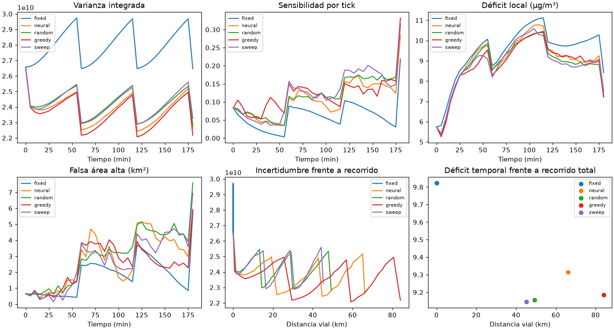
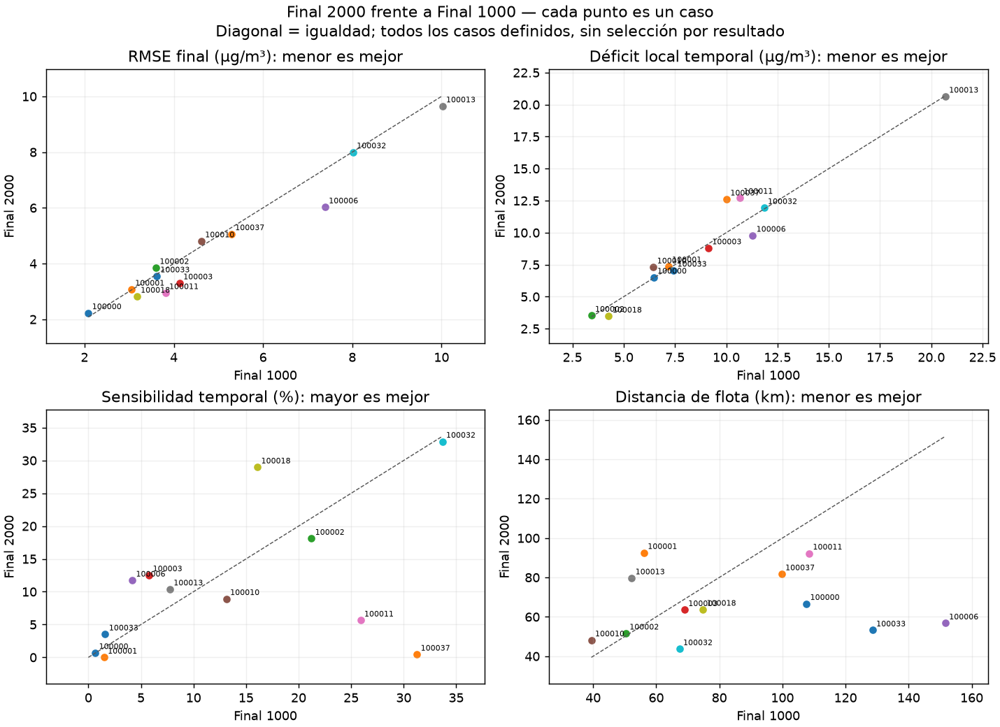
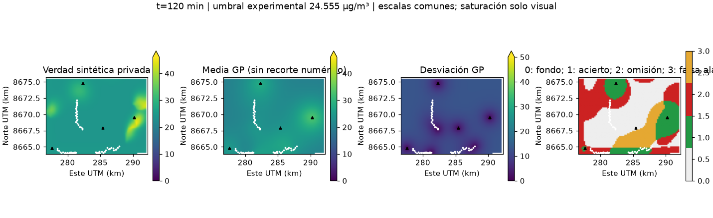
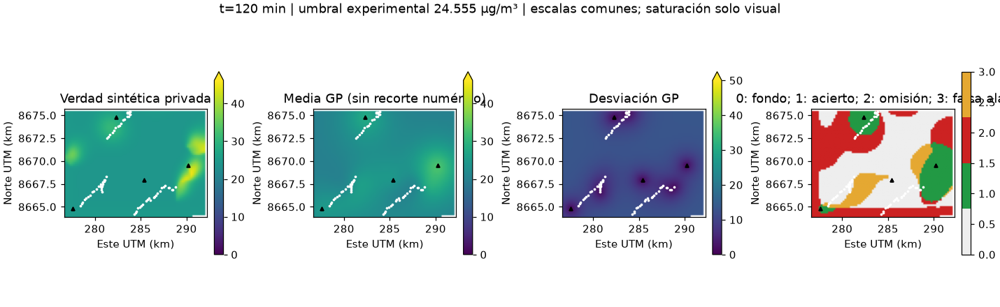
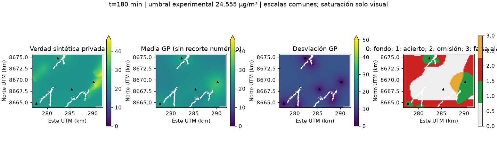

Evolución durante la misión y calidad frente al recorrido
Final 1000

Final 2000

Umbral experimental: 24.555473 µg/m³. No es sanitario.

| Política | RMSE final | Déficit temporal | Sensibilidad (fracción) | Falsa área (km²) | Recorrido (m) | Eventos completados omitidos (fracción) |
|---|---|---|---|---|---|---|
| Final 1000 | 5.4 | 9.069 | 0.1356 | 4.267 | 8.378e+04 | 0.8209 |
| Final 2000 | 5.096 | 9.315 | 0.1116 | 2.727 | 6.614e+04 | 0.8651 |
| Solo fijas | 5.536 | 9.824 | 0.05869 | 1.739 | 0 | 0.9631 |
| Aleatoria | 5.312 | 9.155 | 0.126 | 2.963 | 4.93e+04 | 0.9264 |
| Greedy | 5.04 | 9.185 | 0.1235 | 2.388 | 8.405e+04 | 0.9348 |
| Barrido | 5.234 | 9.146 | 0.1316 | 2.624 | 4.526e+04 | 0.92 |

| Política | Referencia | Meta (%) | Reducción varianza (%) | Reducción RMSE (%) | Reducción recorrido (%) |
|---|---|---|---|---|---|
| Final 1000 | fixed | 20 | 13.13 | 2.449 | — |
| Final 1000 | random | 20 | -0.7772 | -1.662 | -69.94 |
| Final 1000 | greedy | 20 | -3.69 | -7.158 | 0.331 |
| Final 1000 | sweep | 20 | 1.173 | -3.183 | -85.1 |
| Final 2000 | fixed | 20 | 14.49 | 7.955 | — |
| Final 2000 | random | 20 | 0.8064 | 4.077 | -34.17 |
| Final 2000 | greedy | 20 | -2.061 | -1.109 | 21.31 |
| Final 2000 | sweep | 20 | 2.725 | 2.642 | -46.14 |
Porcentajes calculados después de agregar las métricas. Reducir recorrido un 20 % no equivale a cumplir el indicador general. Las falsas alarmas deben acompañar sensibilidad y déficit. El retraso solo entre detectados no resume los eventos omitidos o censurados.
Tabla completa CSV · Referencias CSV · Figura SVG
Cambios agregados · Diferencias por caso. Cambios = candidato menos referencia; el signo favorable depende de la métrica.







